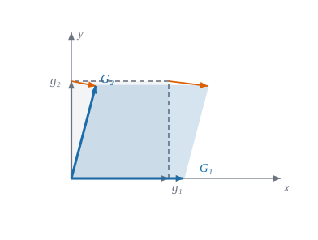
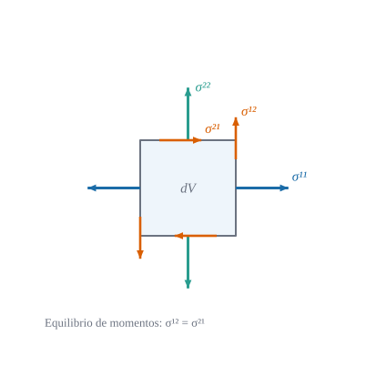

using Geometria, LinearAlgebra
F = [1.15 0.25; 0.0 0.95]
(C = cauchy_green(F), E = green_lagrange(Matrix(1.0I, 2, 2), cauchy_green(F)))(C = [1.3224999999999998 0.2875; 0.2875 0.965], E = [0.1612499999999999 0.14375; 0.14375 -0.017500000000000016])Del gradiente de deformación a la ecuación de equilibrio en coordenadas curvilíneas

Geometria).
Cómo se mide cuánto se ha deformado un sólido de forma que un giro rígido no cuente, y qué ecuación gobierna sus tensiones en equilibrio
Objetivos. Al terminar el tema sabrás:
Prerrequisitos. Álgebra y análisis tensorial en curvilíneas (divergencia y teorema de la divergencia) y Símbolos de Christoffel.
Secciones del tema
Un sólido ocupa una región de referencia, descrita con coordenadas materiales \(\theta^i\) que viajan con las partículas. El vector de posición de una partícula es \(\mathbf{r}(\theta)\) antes de deformarse y \(\mathbf{R}(\theta)=\mathbf{r}(\theta)+\mathbf{u}(\theta)\) después, con \(\mathbf{u}\) el desplazamiento. Cada configuración tiene su base natural: \[ \mathbf{g}_i=\frac{\partial\mathbf{r}}{\partial\theta^i},\qquad \mathbf{G}_i=\frac{\partial\mathbf{R}}{\partial\theta^i}=\mathbf{g}_i+\frac{\partial\mathbf{u}}{\partial\theta^i}, \qquad g_{ij}=\mathbf{g}_i\cdot\mathbf{g}_j,\quad G_{ij}=\mathbf{G}_i\cdot\mathbf{G}_j . \tag{14.1}\]
El gradiente de deformación \(\mathbf{F}=\mathbf{G}_i\otimes\mathbf{g}^i\) lleva cada vector material \(\mathbf{g}_i\) a su transformado \(\mathbf{G}_i\): \(\mathbf{F}\,\mathbf{g}_i=\mathbf{G}_i\) (Figura 14.1). Un elemento de línea \(d\mathbf{r}\) pasa a \(d\mathbf{R}=\mathbf{F}\,d\mathbf{r}\).
La longitud de un elemento de línea cambia de \(d\ell^2=g_{ij}\,d\theta^id\theta^j\) a \(dL^2=G_{ij}\,d\theta^id\theta^j\). La diferencia es lo que mide la deformación.
Definición 14.1 (Deformación de Green–Lagrange) \[ E_{ij}=\tfrac12\bigl(G_{ij}-g_{ij}\bigr),\qquad \frac{dL^2-d\ell^2}{2\,d\ell^2}=E_{ij}\,\frac{d\theta^i}{d\ell}\frac{d\theta^j}{d\ell} . \tag{14.2}\] Es un tensor covariante simétrico (seis componentes en 3D). En términos de \(\mathbf{F}\), el tensor de Cauchy–Green derecho es \(C=F^{\mathsf T}F\) y \(E=\tfrac12(C-I)\) en una base cartesiana.
Proposición 14.1 (Green–Lagrange en función del desplazamiento) Con \(u_i=\mathbf{u}\cdot\mathbf{g}_i\) las componentes covariantes del desplazamiento y \(u_{i\|j}=\partial_ju_i-\Gamma^k_{ij}u_k\) su derivada covariante, \[ E_{ij}=\tfrac12\bigl(u_{i\|j}+u_{j\|i}+u^k{}_{\|i}\,u_{k\|j}\bigr),\qquad u^k{}_{\|i}=g^{kl}u_{l\|i} . \tag{14.3}\]
\(\mathbf{G}_i=\mathbf{g}_i+\mathbf{u}_{,i}\) y \(\mathbf{u}_{,i}=u_{k\|i}\,\mathbf{g}^k\) (derivada de \(\mathbf{u}=u_k\mathbf{g}^k\) con ecuación 6.1 y \(\mathbf{g}^k_{,i}=-\Gamma^k_{ij}\mathbf{g}^j\)). Entonces \(G_{ij}=g_{ij}+\mathbf{g}_i\cdot\mathbf{u}_{,j}+\mathbf{g}_j\cdot\mathbf{u}_{,i}+\mathbf{u}_{,i}\cdot\mathbf{u}_{,j}=g_{ij}+u_{i\|j}+u_{j\|i}+u_{k\|i}u_{l\|j}g^{kl}\). Dividiendo por dos se obtiene ecuación 14.3. \(\blacksquare\)
Definición 14.2 (Pequeñas deformaciones) Si \(\|\nabla\mathbf{u}\|\ll1\) se desprecia el término cuadrático: \[ \varepsilon_{ij}=\tfrac12\bigl(u_{i\|j}+u_{j\|i}\bigr) . \tag{14.4}\] \(\varepsilon_{ij}\) es el tensor de deformación lineal. El error de ecuación 14.4 respecto de \(E_{ij}\) es de orden \(\|\nabla\mathbf{u}\|^2\).
Ejemplo 14.1 (Ejemplo resuelto: cizalla simple y giro rígido) Cizalla. \(\mathbf{u}=(\gamma y,0)\) en cartesianas: \(F=\begin{pmatrix}1&\gamma\\0&1\end{pmatrix}\), \(C=F^{\mathsf T}F=\begin{pmatrix}1&\gamma\\\gamma&1+\gamma^2\end{pmatrix}\) y \[ E=\tfrac12(C-I)=\begin{pmatrix}0&\gamma/2\\\gamma/2&\gamma^2/2\end{pmatrix},\qquad \varepsilon=\begin{pmatrix}0&\gamma/2\\\gamma/2&0\end{pmatrix}. \] Para \(\gamma=0{,}2\): \(E_{12}=0{,}1\) y \(E_{22}=0{,}02\) (que \(\varepsilon\) ignora). La deformación angular de ingeniería es \(\gamma_{12}=2\varepsilon_{12}=\gamma\) (el cambio del ángulo recto).
Giro rígido. Con \(\mathbf{u}\) una rotación finita de ángulo \(\alpha\), \(F=\begin{pmatrix}\cos\alpha&-\sin\alpha\\\sin\alpha&\cos\alpha\end{pmatrix}\neq I\) pero \(C=F^{\mathsf T}F=I\) y \(E=0\): Green–Lagrange no «ve» los giros rígidos. (La deformación lineal \(\varepsilon\) sí los ve a segundo orden, por eso solo vale para giros pequeños.)
Pon a prueba lo anterior. Los ejercicios se corrigen en tu navegador y no envían nada a ningún sitio.
Con \(F=\begin{pmatrix}1{,}15&0{,}25\\0&0{,}95\end{pmatrix}\), ¿cuánto vale \(E_{11}=\tfrac12(C_{11}-1)\)?
\(C_{11}=F_{11}^2+F_{21}^2\).
\(C_{11}=1{,}15^2=1{,}3225\) y \(E_{11}=0{,}16125\).
En una cizalla simple \(\mathbf{u}=(\gamma y,0)\) con \(\gamma=0{,}2\), ¿cuánto vale \(E_{12}\)?
\(E_{12}=\gamma/2=0{,}1\).
Un giro rígido de cualquier ángulo tiene deformación de Green–Lagrange nula.
Verdadero. \(C=F^{\mathsf T}F=I\) para toda rotación, luego \(E=\tfrac12(C-I)=0\).
Sobre una superficie interior de normal unitaria \(\mathbf{n}\) actúa por unidad de área una tracción \(\mathbf{t}\). Cauchy probó que depende linealmente de \(\mathbf{n}\): \(\mathbf{t}=\boldsymbol{\sigma}\,\mathbf{n}\), con \(\boldsymbol{\sigma}\) el tensor de tensiones, de componentes contravariantes \(\sigma^{ij}\) (Figura 14.2 de la sección siguiente).
Proposición 14.2 (Ecuación de equilibrio) Para pequeñas deformaciones, si sobre cada elemento actúan fuerzas de volumen \(\mathbf{b}\) por unidad de volumen, el equilibrio de fuerzas y de momentos equivale a \[ \sigma^{ij}{}_{\|j}+b^i=0,\qquad \sigma^{ij}=\sigma^{ji}, \tag{14.5}\] con la divergencia covariante \(\sigma^{ij}{}_{\|j}=\dfrac1{\sqrt g}\partial_j\bigl(\sqrt g\,\sigma^{ij}\bigr)+\Gamma^i_{jk}\sigma^{jk}\).
El equilibrio de fuerzas de una porción \(\Omega\) es \(\oint_{\partial\Omega}\boldsymbol{\sigma}\mathbf{n}\,dS+\int_\Omega\mathbf{b}\,dV=\mathbf{0}\). Con el teorema de la divergencia (Teorema 7.1) aplicado a cada componente, \(\int_\Omega(\nabla\!\cdot\!\boldsymbol{\sigma}+\mathbf{b})\,dV=\mathbf{0}\) para todo \(\Omega\), luego \(\nabla\!\cdot\!\boldsymbol{\sigma}+\mathbf{b}=\mathbf{0}\) punto a punto. La expresión en componentes es la divergencia covariante de un tensor de orden dos. La simetría sale del equilibrio de momentos de un elemento diferencial (sin pares distribuidos). \(\blacksquare\)
Ejemplo 14.2 (Ejemplo resuelto: una tensión uniforme está en equilibrio) Sea \(\boldsymbol{\sigma}=\begin{pmatrix}2&0{,}5\\0{,}5&-1\end{pmatrix}\) uniforme en cartesianas, sin fuerzas de volumen. Su divergencia es evidentemente nula. Visto en polares, \(\sigma^{ij}(r,\theta)\) varía de punto a punto (se transforma con \(J\)), y aun así ecuación 14.5 da cero: los términos \(\partial_j(\sqrt g\sigma^{ij})/\sqrt g\) y \(\Gamma^i_{jk}\sigma^{jk}\) se compensan. Es la misma lección del tema de Christoffel: descontar el giro de la base.

Pon a prueba lo anterior.
¿Qué expresa \(\sigma^{ij}{}_{\|j}+b^i=0\)?
El equilibrio de fuerzas: la divergencia de las tensiones más las fuerzas de volumen es nula. Hooke relaciona tensión y deformación; la compatibilidad, deformaciones y desplazamientos.
calculado Se comprueban Green–Lagrange (fórmula con derivadas covariantes frente a la métrica deformada), el giro rígido y el equilibrio de un tensor uniforme en polares.
using Geometria, LinearAlgebra
F = [1.15 0.25; 0.0 0.95]
(C = cauchy_green(F), E = green_lagrange(Matrix(1.0I, 2, 2), cauchy_green(F)))(C = [1.3224999999999998 0.2875; 0.2875 0.965], E = [0.1612499999999999 0.14375; 0.14375 -0.017500000000000016])# Green–Lagrange en polares: fórmula (derivadas covariantes) frente a la métrica deformada
base(t) = base_polar(t[1], t[2]); t0 = [1.4, 0.7]
ucart(x) = [0.05 * x[1] * x[2], 0.02 * x[1]^2 - 0.03 * x[2]]
xcart(t) = [t[1] * cos(t[2]), t[1] * sin(t[2])]
udn(t) = transpose(base(t)) * ucart(xcart(t))
R(t) = xcart(t) + ucart(xcart(t))
G = metrica(jacobiana_numerica(R, t0))
(directa = green_lagrange(metrica(base(t0)), G), formula = green_lagrange_desde_u(base, udn, t0),
lineal = deformacion_pequena(base, udn, t0))(directa = [0.063882871787873 -0.040236672173956045; -0.040236672173956045 -0.0881419436599642], formula = [0.06388287184393909 -0.040236672144850966; -0.040236672144850966 -0.08814194379470423], lineal = [0.06141343278504018 -0.04033598023054991; -0.04033598023054991 -0.09078366154875075])# Un tensor uniforme: su divergencia es nula también en componentes polares
S = [2.0 0.5; 0.5 -1.0]
σpol(t) = (J = inv(base_polar(t[1], t[2])); J * S * J')
(σ_en_polares = σpol(t0), divergencia = divergencia_tensor(base, σpol, t0))(σ_en_polares = [1.247675579344592 -0.9951364453804069; -0.9951364453804069 -0.12636509150234282], divergencia = [9.428949288015076e-11, -9.447775894955157e-11])Las identidades están en julia/test/runtests.jl (conjuntos «Elasticidad del sólido» y «Green–Lagrange en curvilíneas»).
Estiramiento. Con el gradiente del Ejemplo 14.1, calcula el estiramiento \(\lambda=\sqrt{G_{11}/g_{11}}\) en la dirección \(\mathbf{g}_1\) para \(F\) de la portada.
\(G_{11}=1{,}3225\), \(g_{11}=1\): \(\lambda=1{,}15\), y \(E_{11}=\tfrac12(\lambda^2-1)=0{,}161\) ✓.
Tracción uniaxial. Para \(\mathbf{u}=(\varepsilon x,0)\) calcula \(E_{11}\) y \(\varepsilon_{11}\) y compara.
\(E_{11}=\varepsilon+\varepsilon^2/2\), \(\varepsilon_{11}=\varepsilon\): el término cuadrático es el error de la teoría lineal.
Polares. Demuestra que para \(u^r=\alpha r\), \(u^\theta=0\) (expansión uniforme) \(\varepsilon_{rr}=\alpha\) y \(\varepsilon_{\theta\theta}=\alpha r^2\) (componente covariante).
\(u_r=\alpha r\) y \(u_\theta=0\); \(\varepsilon_{rr}=\partial_ru_r=\alpha\); \(\varepsilon_{\theta\theta}=\partial_\theta u_\theta-\Gamma^r_{\theta\theta}u_r=-(-r)(\alpha r)=\alpha r^2\).
Equilibrio. Comprueba con divergencia_tensor que \(\sigma^{rr}=A/r^2\), \(\sigma^{\theta\theta}=-A/r^4\), \(\sigma^{r\theta}=0\) está en equilibrio (problema de Lamé sin fuerzas de volumen).
σ(t) = [A/t[1]^2 0; 0 -A/t[1]^4] y divergencia_tensor(base, σ, t) ≈ [0, 0]: la componente radial vale \(\partial_r(r\sigma^{rr})/r+\Gamma^r_{\theta\theta}\sigma^{\theta\theta}=-A/r^3+(-r)(-A/r^4)=0\).
Fuentes. Texto autónomo, resultados estándar de mecánica del continuo (Flügge 1972; Romano et al. 2006; Novozhilov 1959). Las identidades se comprueban con Geometria (tests citados).
Qué queda pendiente. El equilibrio se demuestra para pequeñas deformaciones (la distinción entre tensiones de Cauchy y de Piola–Kirchhoff en grandes deformaciones no se trata); notas históricas con fuentes secundarias; figuras con revisión visual pendiente; referencias no leídas línea a línea.
Son las mismas que aparecen en el margen, junto al texto.
Flügge, W. 1972. Tensor Analysis and Continuum Mechanics. Springer-Verlag.
Novozhilov, V. V. 1959. The Theory of Thin Shells. P. Noordhoff ltd.
Romano, A., R. Lancellota, y A. Marasco. 2006. Continuum Mechanics using Mathematica. Birkhäuser, Boston.